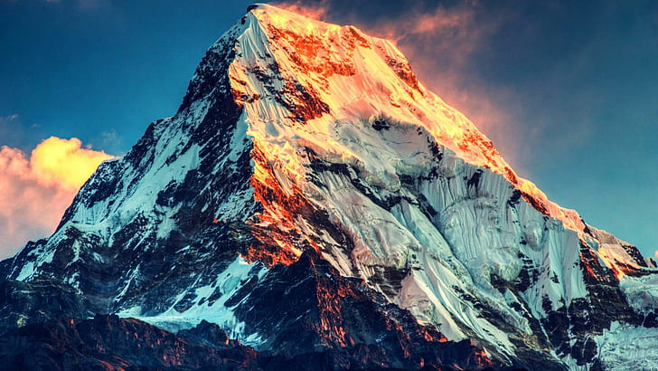
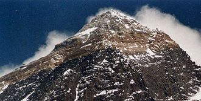
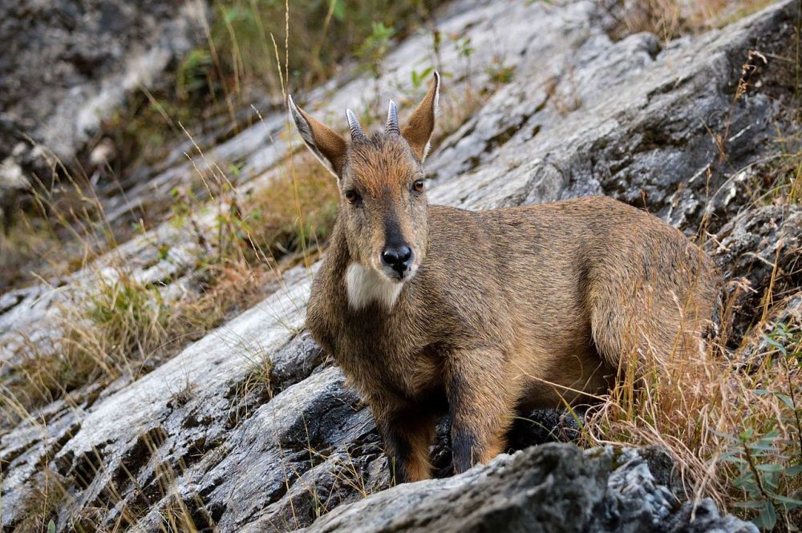

Everest Mountain

The Highest Mountain in the World
Mount Everest (English: Mount Everest) is the second highest mountain in the world after Mauna Kea (if measured from sea level). Its peak ridge marks the border between Nepal and Tibet; the peak is in tibet. In Nepal, this mountain is called sagarmatha (, Sanskrit for "head of the sky") and in Tibetan chomolangma or qomolangma ("mother of the universe"), pronounced in Chinese (pinyin: zhumulangma feng). This mountain gets its English name from the name Sir George Everest. This name was given by Sir Andrew Waugh, British surveyor-general of India, successor to Everest. The peak of Everest is one of the seven peaks in the world.
1. Geology

Geologists have divided the rocks that make up Mount Everest into three units called formations. Each formation is separated from the other by a low-angle fault called a detachment, along which they are thrust south of each other. From the peak of Mount Everest to its base, these rock units are the Qomolangma Formation, North Column Formation and Rongbuk Formation. The Qomolangma Formation, also known as the Jolmo Lungama Formation, stretches from peak to peak of the Yellow Line at an altitude of approximately 8,600 m (28,200 ft) above sea level. It consists of parallel laminated and layered, interbedded Ordovician limestone with subordinate layers of recrystallized dolomite with argillaceous laminae and siltstone. Gansser first reported finding microscopic crinoid fragments in this limestone. Later Petroglyph analysis of limestone samples from near the summit revealed that they consisted of carbonate pellets and finely fragmented remains of trilobites, crinoids, and ostracods. Other samples recrystallized so poorly that the original constituents could not be determined. The 60 m (200 ft) thick, weather-resistant layer of white thrombolite consists of the "Three Layers" and is the base of Everest's summit pyramid. This layer begins to appear approximately 70 m (230 ft) below the summit of Mount Everest, and consists of sediment trapped, bound, and cemented by a biofilm of micro-organisms, primarily cyanobacteria in shallow marine waters. The Qomolangma Formation is fractured by several high-angle faults that terminate at the low-angle Qomolangma Detachment. This detachment separates it from the underlying Yellow Band. The lower five meters of the Qomolangma Formation covering this detachment experienced very high deformation. Most of Mount Everest at elevations between 7,000 and 8,600 m (22,965.88 and 28.22 ft) consists of the North Col Formation, with the Yellow Band forming the upper part between 8,200 to 8,600 m (26,900 to 28,200 ft). The Yellow Band consists of Middle Cambrian intercalated layers bearing diopside-epidote marble that has weathered to a characteristic yellowish brown color, and muscovite-biotite and phyllite semischists. Petrographic analysis of marble collected from about 8,300 m (27,200 ft) found that it consisted of as much as five percent of the ghosts of recrystallized crinoid ossicles. The top five meters of the Yellow Line located adjacent to the Qomolangma Detachment experienced severe deformation. A 5–40 cm (2.0–15.7 in) thick fault breccia separates it from the overlying Qomolangma Formation.
2. Flora and Fauna

There is very little native flora or fauna on Everest. Moss grows at an altitude of 6,480 meters (21,260 ft) on Mount Everest, and may be the highest-altitude plant species. The alpine cushion plant called Arenaria is known to grow below an altitude of 5,500 meters (18,000 ft) in the region. According to studies based on satellite data from 1993 to 2018, vegetation is widespread in the Everest area. Researchers have discovered plants in areas previously thought to be bare. Euophrys omnisuperstes or small black jumping spider, has been found at an altitude of 6,700 meters (22,000 ft), possibly making it the tallest non-confirmed animal, and at Everest base camp the jumping spider Euophrys everestensis appears.[49] The spiders hid in crevices and probably ate frozen insects blown there, likely microscopic life at higher altitudes. Birds such as the bar-headed goose, were seen flying higher up the mountain, while others, such as the chough were seen flying as high as the South Col at an altitude of 7,920 meters (25,980 ft). Yaks are often used to transport equipment for climbing Mount Everest. They can carry up to 100 kg (220 pounds), and have thick fur and large lungs. Other animals in the region include the Himalayan tahr which is sometimes eaten by snow leopards. Himalayan black bears can be found up to an altitude of about 4,300 meters (14,000 ft) and red pandas also occur in the region. One expedition discovered surprising species in the region including a pika and ten new species of ants.